This story was written with AI writing and visualization assistance. All account details, events, scores, amounts, and operating results are synthetic; this is a production design blueprint, not a report about a real customer or deployed system.
At 09:12, a CRM agent detects that a $2.4 million enterprise renewal has moved from “likely” to “at risk.” Support severity is rising. A procurement email asks for a 12 percent discount. A call transcript suggests the customer may consolidate vendors. The account executive is boarding a flight, the regional vice president is in another meeting, and the response deadline is 11:00.
The agent can do more than summarize. It can change the opportunity stage, draft a concession, create an escalation case, reserve a specialist, send a customer email, or amend a quote. The model is confident that delay is dangerous. Should it act?
Yes—but not with one undifferentiated permission and not on the strength of confidence alone. It should autonomously collect evidence, surface contradictions, calculate options, and prepare reversible internal work. It should not commit price, terms, credits, contractual language, or a binding customer message until an accountable human approves the exact action. After approval, the system should issue a narrow, short-lived permission for that transaction; independently execute it; verify the resulting business state; preserve a receipt; and revoke or expire the authority.
That is the difference between an agent demo and a production control system.
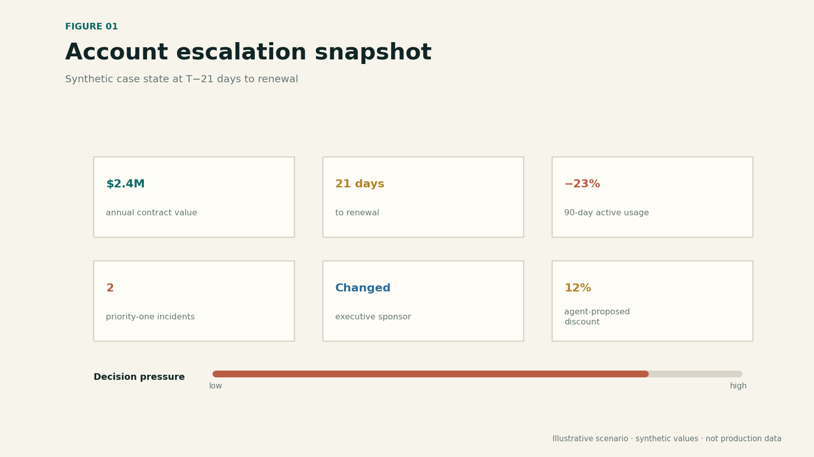
The case that breaks naive autonomy#
The escalation contains the conditions under which simple rules fail. The account is valuable, time is short, evidence is incomplete, and several available actions have radically different consequences. Creating an internal task is not economically equivalent to changing the quoted price. Reserving a solutions architect is not equivalent to sending a contractual promise. Yet a typical CRM integration may expose all four through the same broad OAuth scope and call them all “tool use.”
The useful unit of governance is therefore not the agent. It is the proposed action in context.
For each action, the system must ask: What resource will change? Who is accountable? What evidence supports the change? How fresh and contradictory is that evidence? What is the commercial impact? Can the action be reversed? What policy applies? What authority has been granted? How will success be observed? What happens if the tool returns success but the business state is wrong?
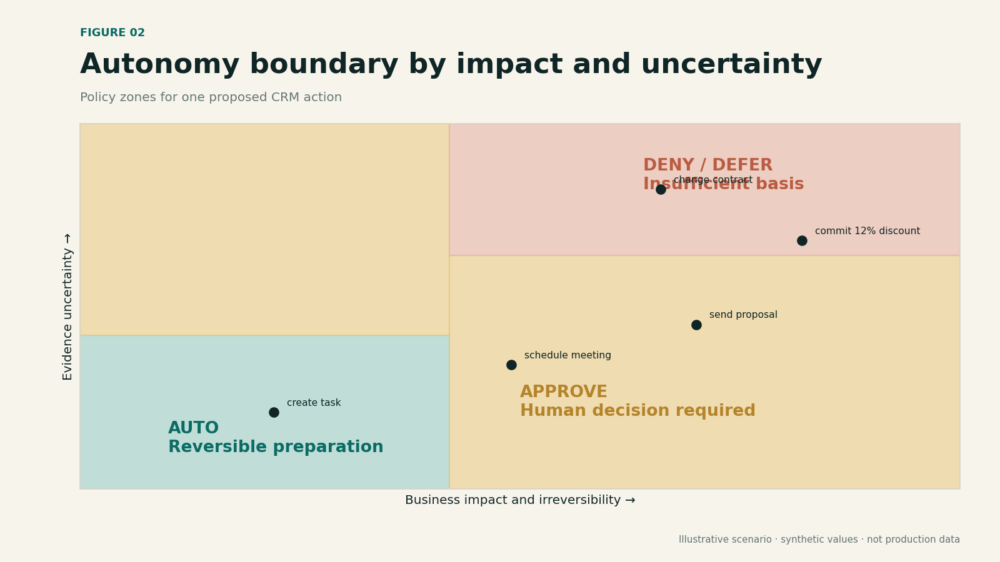
A sensible autonomy boundary has at least four zones. Low-impact, reversible work can run automatically. Moderate-impact work may run within pre-approved limits. High-impact or ambiguous work requires an accountable reviewer. A prohibited zone rejects the action even if someone casually approves it—for example, an agent promising a nonstandard liability clause without legal authority.
This boundary should be enforced outside the model. The agent can propose and explain; it should not be able to reinterpret its own policy, mint its own credential, execute its own high-risk action, and declare itself successful. Production separation of duties places those functions in independent services with their own logs and failure behavior.
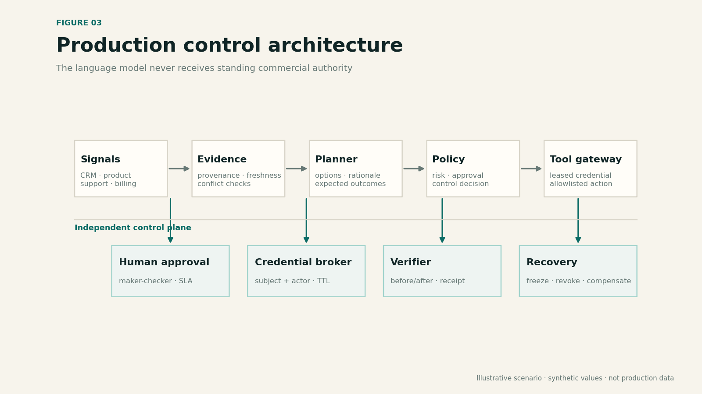
The architecture has two paths. The decision path assembles evidence, classifies the action, evaluates policy, and—where required—obtains human approval. The execution path receives a constrained authorization, invokes the CRM tool, observes the resulting state, writes a tamper-evident receipt, and triggers recovery if intent and outcome diverge.
Neither path can rely on the CRM record as a timeless source of truth. The evidence changes minute by minute. A support incident may be resolved. A new email may contradict a transcript. The approver may alter the allowed discount. A quote may be edited after the approval screen was opened. The control plane therefore evaluates a versioned decision moment, not an abstract account.
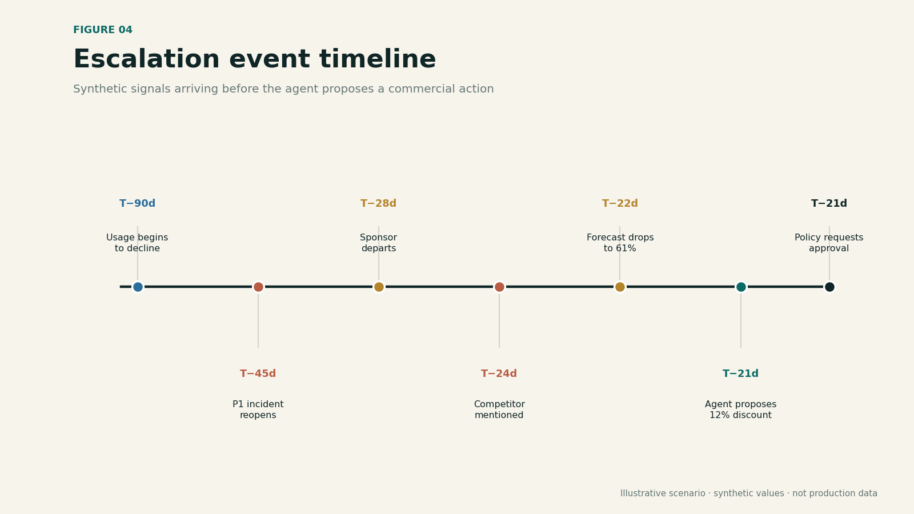
The first design rule follows: freeze the decision inputs without pretending the world has stopped. The evidence bundle gets a version and digest; the proposed action references that digest; and the execution gate rechecks critical preconditions just before acting. If material facts have changed, the approval is stale and the workflow returns to evaluation.
Evidence before action#
An agent’s natural-language rationale is not evidence. It is a claim about evidence. A production workflow needs a machine-readable bundle containing the underlying observations, their provenance, their age, the conflicts among them, and the transformations used to produce each decision variable.
For the account in this scenario, the bundle might include the opportunity record, current quote, master agreement, service-level schedule, open support incidents, billing status, meeting transcript, procurement email, product telemetry summary, relationship map, approval history, and the policy version used to calculate commercial limits.
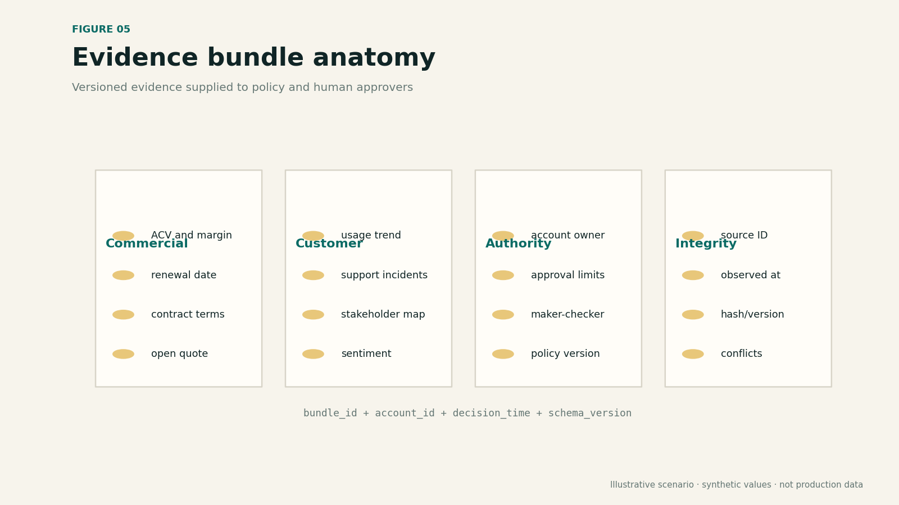
The bundle should distinguish observations from inferences. “The customer requested a 12 percent discount at 08:41” may be an attributed email observation. “The account will churn without a concession” is an inference. The first can be hashed and retrieved; the second needs a model version, method, uncertainty, and competing explanation.
That distinction is essential because enterprise data is contradictory. The CRM says the renewal probability is 78 percent. A transcript says “we are evaluating alternatives.” Support says the critical incident is mitigated. Product telemetry still shows an error spike. Flattening those records into one summary hides the precise disagreement an approver needs to see.
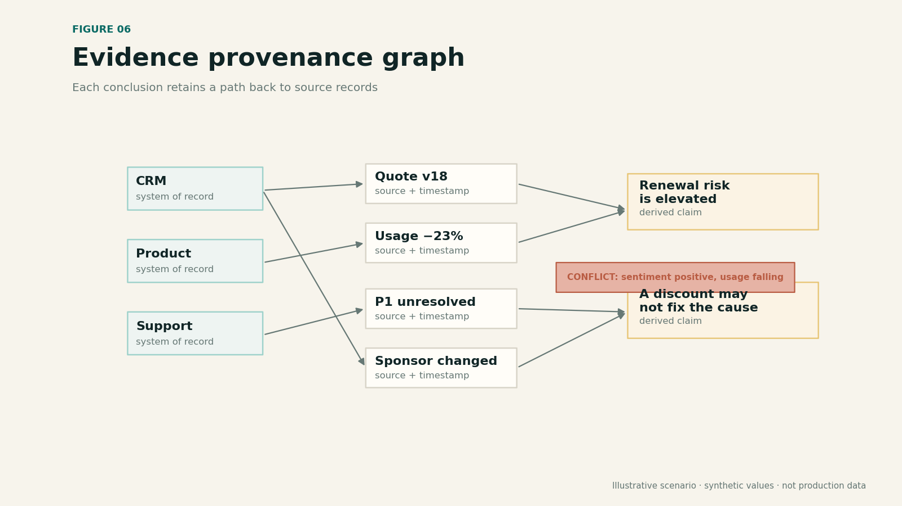
Provenance should survive transformation. If the agent calculates an exposure score from five inputs, the receipt should point to the exact input versions and calculation version. If a meeting transcript contributes a churn signal, a reviewer should be able to navigate from the claim to the cited turn, recording, speaker attribution, consent policy, and processing timestamp. Retrieval without lineage is merely convenient ambiguity.
Evidence also ages at different rates. Contract terms may remain valid for months. Inventory, incident status, price approvals, and customer sentiment can become stale within minutes or hours. A single “last updated” field cannot capture this difference.
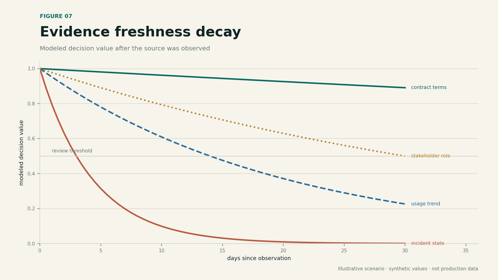
The evidence service should apply source-specific freshness policies and identify facts that must be revalidated at execution. A five-minute-old support status might be acceptable for drafting but too old for promising a recovery deadline. A six-month-old signed contract might be authoritative unless a later amendment exists. Freshness is a policy input, not a universal threshold.
The same is true for quality. A signed agreement scores high on authority for contract terms but says little about current sentiment. A call transcript is timely and rich but can contain transcription errors or speaker ambiguity. Telemetry is precise for measured events yet incomplete for the customer’s commercial intent.
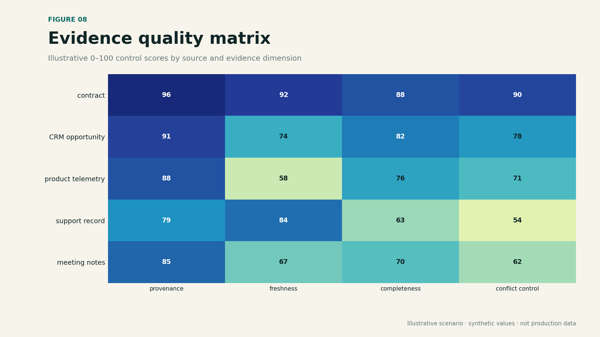
A robust bundle should expose these dimensions instead of collapsing them into a decorative confidence score. Minimum controls include source identity, collection time, effective time, content hash, access classification, retention rule, claim links, unresolved conflicts, freshness policy, and an evidence-set digest. The digest is then bound to the proposed action and approval.
This is consistent with the governance direction in the NIST AI Risk Management Framework: risk management should be continuous, context-sensitive, documented, and supported by clear accountability. In operational terms, “context” must become a reproducible object, not a paragraph generated after the fact.
Risk belongs to the action, not the agent#
Teams often label an agent “low risk” or “high risk.” That is too coarse to be useful. The same agent may safely summarize a call, cautiously update an internal task, and dangerously change a commercial commitment within the same session.
An action taxonomy makes those differences explicit. For this workflow, we can separate observe, analyze, prepare, coordinate, communicate, commit, and administer. Each class maps to different allowed resources, limits, approval requirements, verification checks, and recovery procedures.
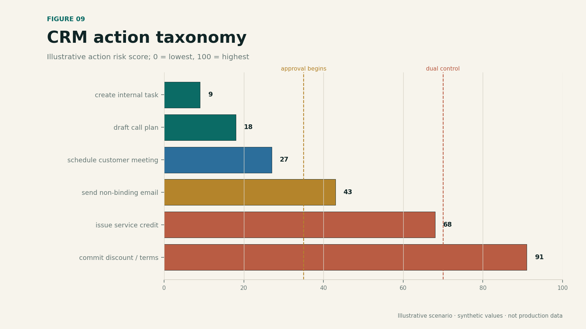
The taxonomy should be semantic rather than endpoint-based. A generic updateOpportunity API can alter an internal note, a forecast category, a committed renewal amount, or a close date. Those are not the same action merely because they share an endpoint. The authorization request should describe the business operation: fields, old values, new values, resource, purpose, exposure, and governing policy.
A practical risk function can combine five dimensions:
• Impact: financial, contractual, customer, regulatory, or operational harm if wrong.
• Irreversibility: how completely and quickly the action can be undone.
• Uncertainty: missing, stale, low-quality, or conflicting evidence.
• Scope: number and sensitivity of records, people, systems, or downstream effects.
• Control strength: approval, separation of duties, bounded permission, verification, and recovery coverage.
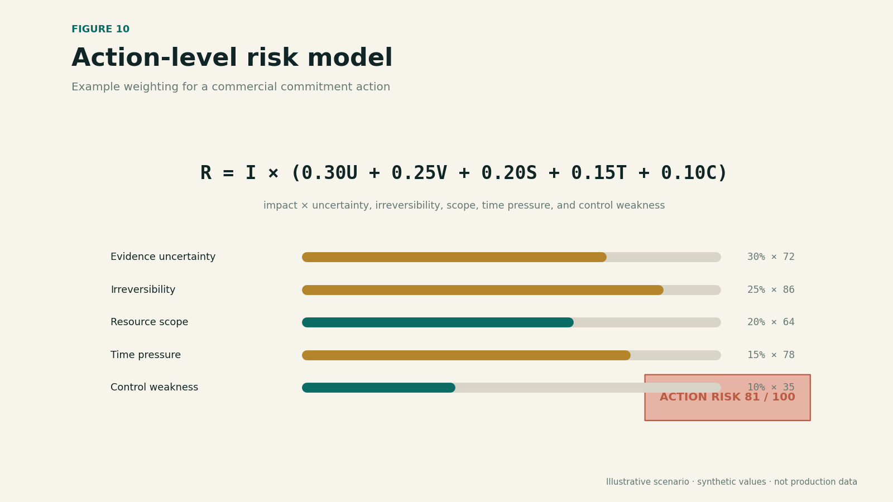
The point of the formula is not false precision. It is consistent routing. A 12 percent discount on $2.4 million nominally changes $288,000 of contract value before considering margin, precedent, renewal term, or contingent credits. That exposure should not be governed by the same threshold as a meeting reminder. More importantly, the risk score should attach to the specific proposed delta, not to a generic “renewal action.”
Tail risk matters more than the average. Most incorrect CRM actions may be cheap to repair, while a small number create a binding commitment, reveal sensitive data, or damage a strategic relationship. Independent approval and permission bounds may only modestly change the median loss, yet materially compress the extreme-loss tail.
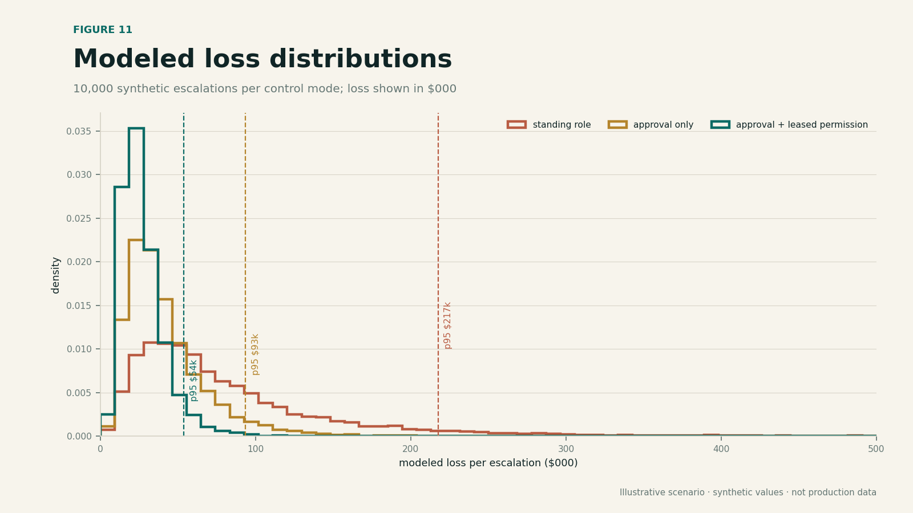
Model confidence cannot substitute for this analysis. A model can be highly confident about a prediction and still lack authority to act. It can also be calibrated on the wrong population, miss a new policy, or infer correctly that a concession will help while failing to account for margin or precedent.
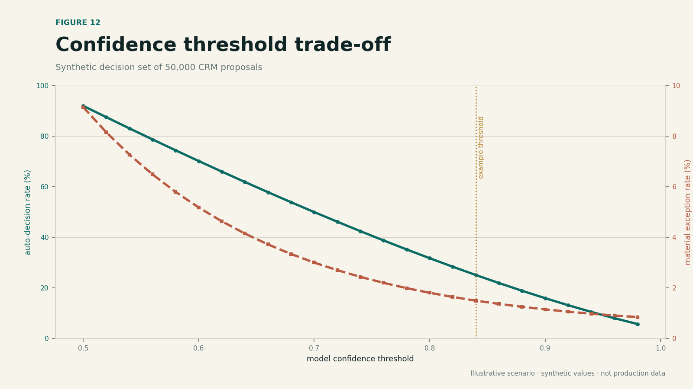
Confidence should influence uncertainty, request more evidence, or determine whether the agent may propose an option. Authorization comes from policy and accountable delegation. This principle also addresses the OWASP guidance on excessive agency: functionality, permissions, and autonomy should be minimized to what the use case actually requires.
Human approval that adds information#
“Human in the loop” is not a control unless the human sees the consequential differences, has authority to decide, and can realistically refuse. A button placed after a long AI-generated summary often produces automation bias, not oversight.
Approval policy should depend on action class and exposure. An internal task may be automatic. A nonbinding draft may be generated automatically but require review before sending. A standard discount within delegated limits may need one commercial approver. Nonstandard terms may require sales and legal approval. A prohibited action remains prohibited.
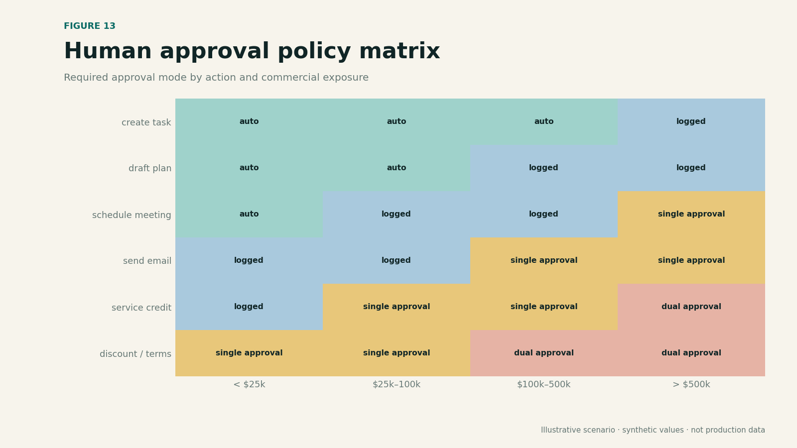
The approval service must verify that the reviewer is eligible for the exact decision: correct role, region, account relationship, financial limit, conflict-of-interest status, and current employment state. “A manager clicked approve” is insufficient if the manager’s delegated authority ends at 8 percent.
Separation of duties matters. The agent is the maker. A human is the checker for consequential deltas. A credential service issues bounded authority only after a valid decision. A separate executor performs the mutation. A verifier observes the result. No component should silently collapse these roles because they happen to run in one workflow engine.
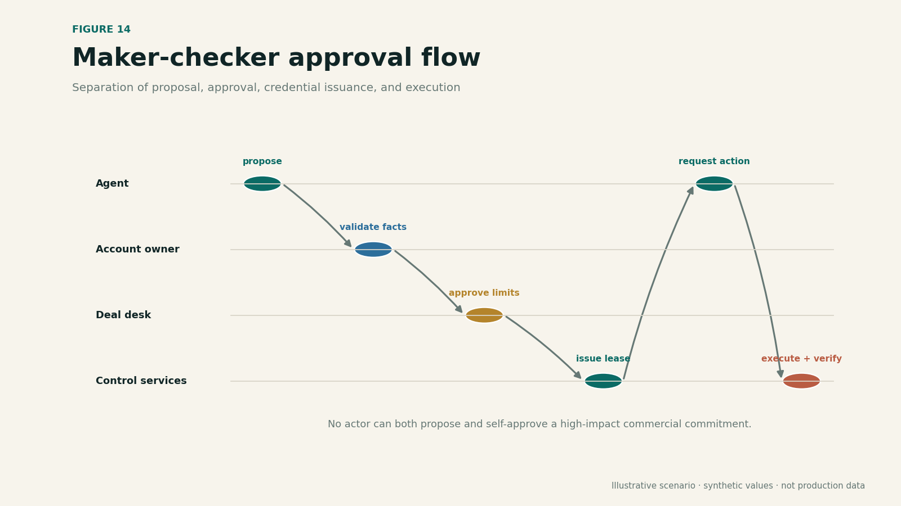
Time pressure is real, so approval design must optimize for decision quality and latency. Faster is not always safer, and slower is not always more controlled. An approval that arrives after the commercial deadline has failed operationally. A rushed approval without conflicts and deltas has failed as a control.
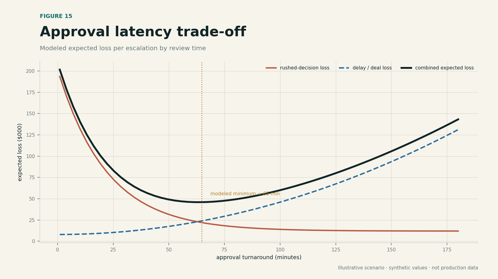
The system can reduce latency without weakening authority: route to an on-call approval pool, show the decision on mobile, precompute policy constraints, prefetch source snippets, set escalation timers, and fall back to a safer action if the deadline expires. In this case, timeout should not convert silence into a 12 percent discount. It should convert the workflow into a nonbinding acknowledgement, internal escalation, and scheduled human follow-up.
The approval packet is the core interface. It should not ask, “Do you approve the agent’s plan?” It should show the before-and-after values, commercial exposure, affected resources, customer-facing text, governing limit, critical evidence, unresolved conflicts, expiry time, verification plan, and rollback option.
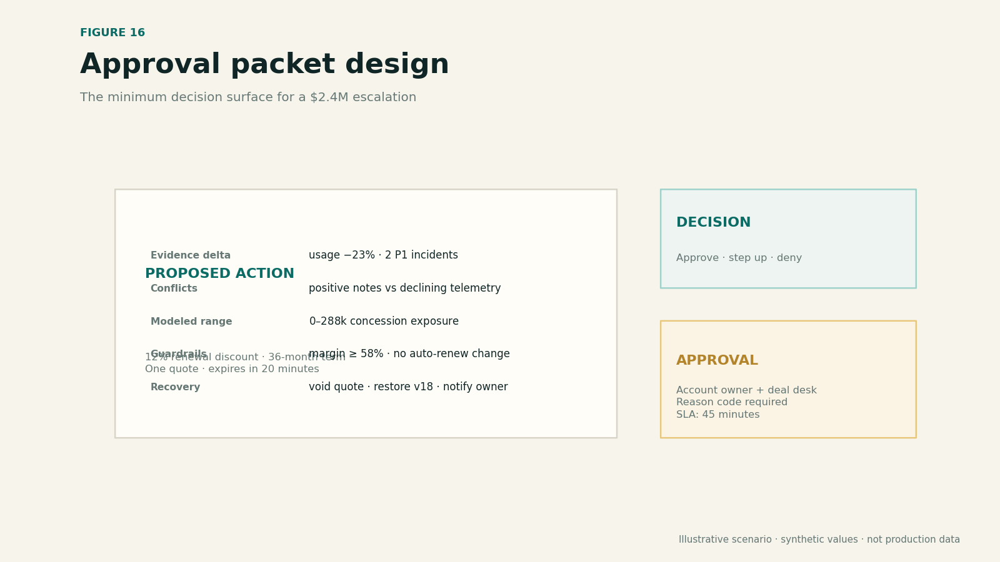
The human can approve, reject, or modify. Modification creates a new proposal and digest; it does not invisibly edit the old approval. The decision record captures the accountable subject, timestamp, policy version, evidence digest, approved delta, conditions, reason, and expiry. If the proposed customer message changes afterward, approval no longer matches and execution must stop.
Replace standing privilege with leased authority#
The agent should not hold a broad, long-lived CRM credential “just in case.” Standing privilege turns every prompt injection, tool-selection error, dependency compromise, and policy bug into a larger blast radius.
Instead, define an authority envelope for the transaction. The envelope binds the accountable human principal, acting agent or workload, business action, resource, purpose, allowed values, forbidden fields, evidence digest, approval decision, tool, time window, usage count, and required verification.
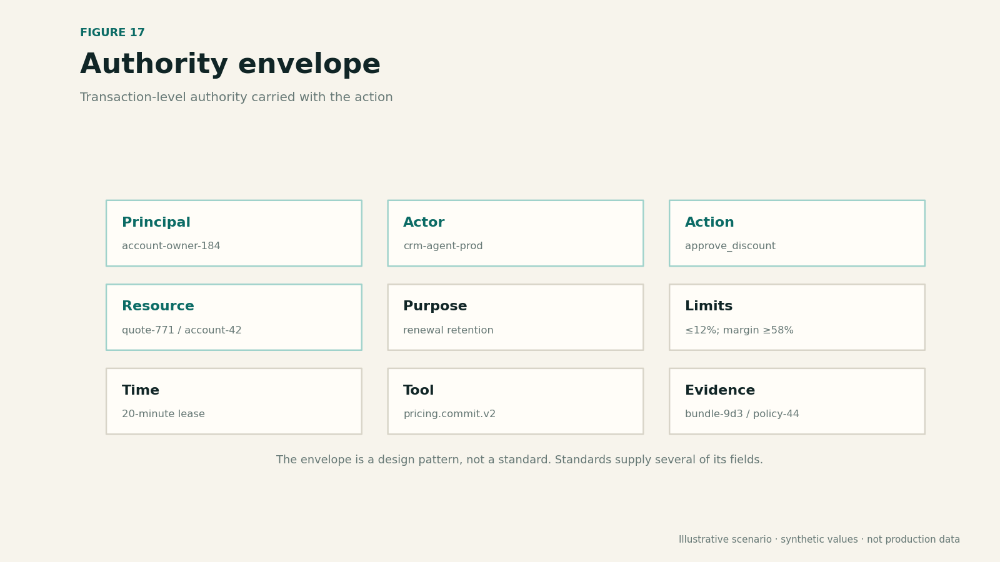
This model reflects a crucial identity distinction: on whose behalf is the action performed, and which agent or workload is acting now? The 2026 NIST NCCoE concept paper on software and AI agent identity and authorization frames this as a central challenge for agent adoption. Accountability is lost when a shared service account erases the human principal or when a user token erases the automated actor.
The permission should narrow step by step: from an employee’s general CRM role, to the agent’s allowable action family, to one account, to one record, to specified fields and values, to one tool call during a short time window.
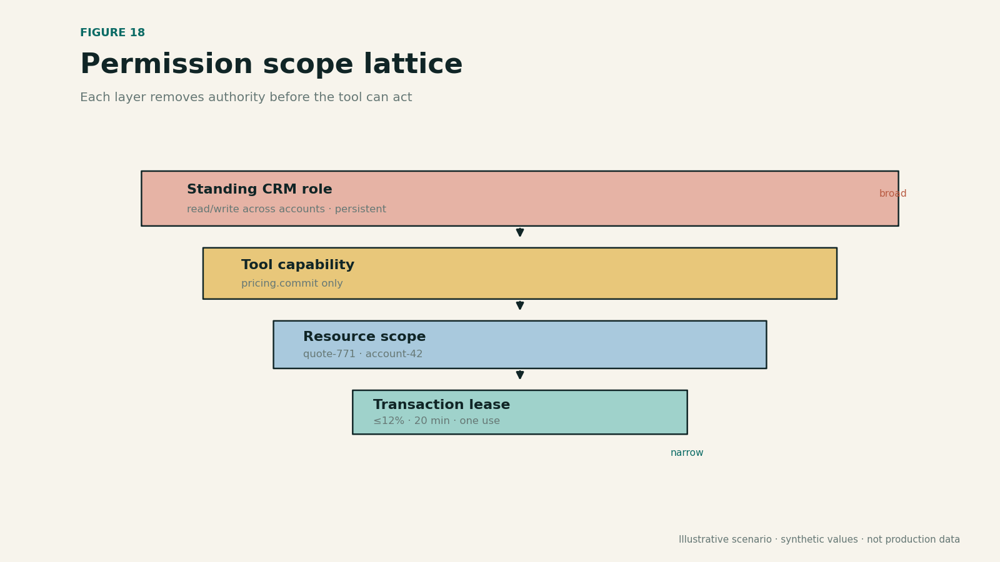
A permission lease is issued just in time, after approval and immediately before execution. It is audience-bound to the CRM API, sender-constrained where supported, limited to the approved action, valid for perhaps a minute rather than a workday, and consumable once. It expires automatically and is revoked early after success, cancellation, material context change, or detected compromise.
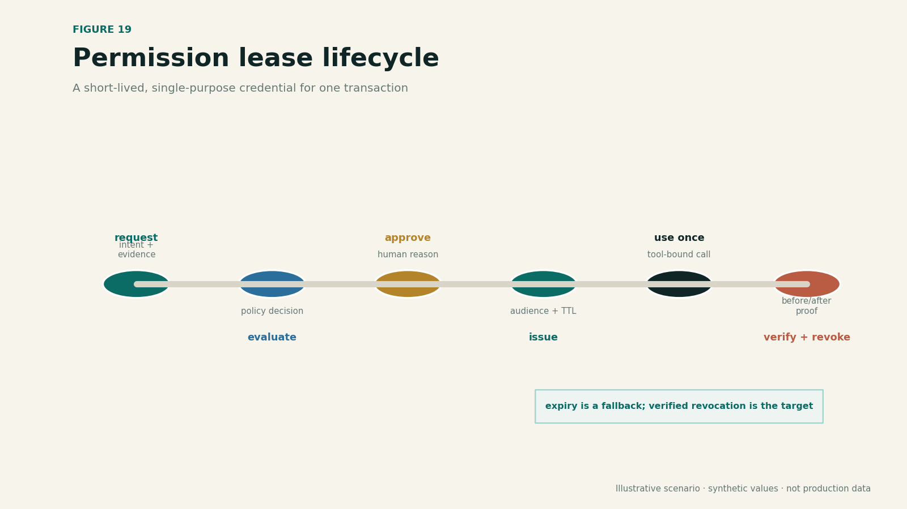
Lease duration and scope interact. A five-minute token for one field on one quote presents a different exposure from a one-hour token across every opportunity in the region. Teams should measure that combined exposure, not celebrate a short TTL while retaining a broad resource scope.
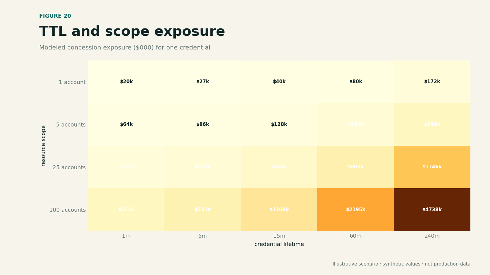
Standards already provide useful building blocks. OAuth 2.0 Token Exchange, RFC 8693 supports delegation and impersonation semantics, including the distinction between subject and actor. Rich Authorization Requests, RFC 9396 can carry structured authorization details. Resource Indicators, RFC 8707 restrict a token to the intended resource server. DPoP, RFC 9449 sender-constrains tokens to reduce replay. These are components, not a complete business authorization model, but they are better foundations than embedding an all-powerful API key in an agent runtime.
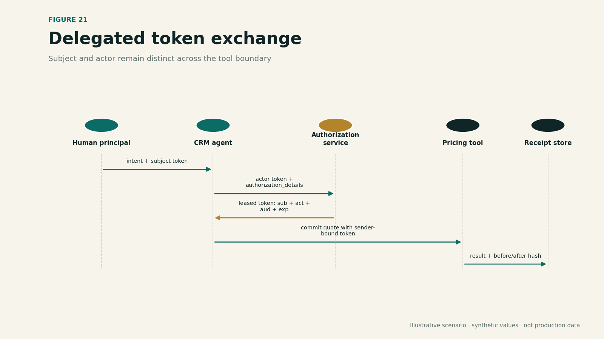
At the policy boundary, a standardized decision interface also helps separate enforcement from business logic. The OpenID AuthZEN Authorization API 1.0 defines a request-response pattern for externalized authorization decisions. Workload identity systems such as SPIFFE and its Workload API can authenticate the executor without shipping long-lived secrets. The implementation must still express field-level commercial limits, approval binding, evidence digests, and lease consumption.
Verify the business state, not the API call#
The executor should refuse to act until five gates agree:
1. The evidence digest and proposal version match the approved decision.
2. Policy still permits the action under the current context.
3. The approver was eligible and the decision has not expired or been revoked.
4. The lease covers this actor, resource, field delta, audience, and time.
5. Live preconditions still hold—for example, the quote version and account owner have not changed.
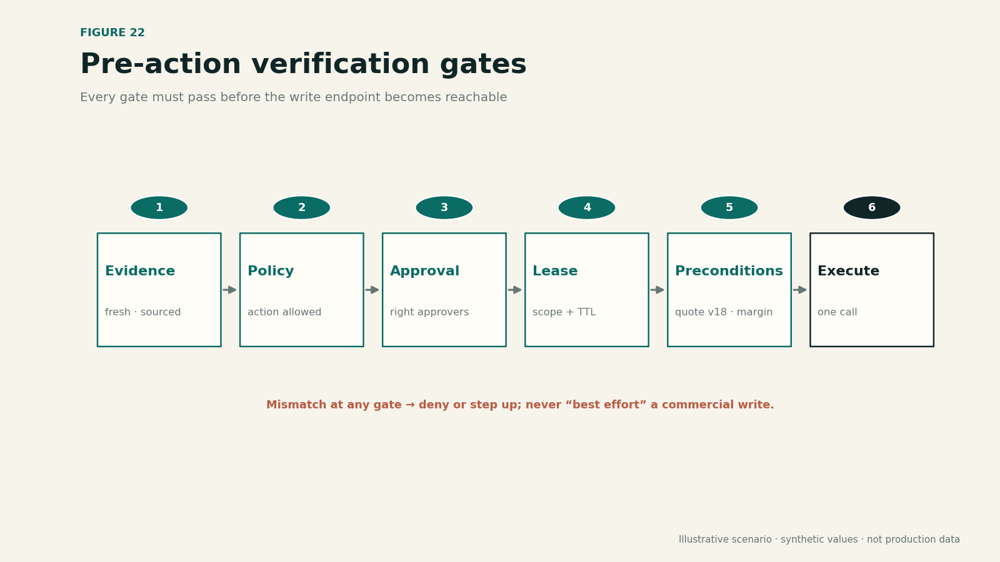
The CRM write should be idempotent, use an expected record version, and carry a unique action identifier. A retry must not double-apply a credit or send the customer message twice. If the expected version has changed, the executor should reject the write and send the workflow back for reconciliation rather than overwrite newer human work.
An HTTP 200 response proves only that an endpoint accepted a request. It does not prove that the intended price is active, the correct quote was updated, downstream billing synchronized, the customer saw the intended message, or no automation subsequently overwrote the field.
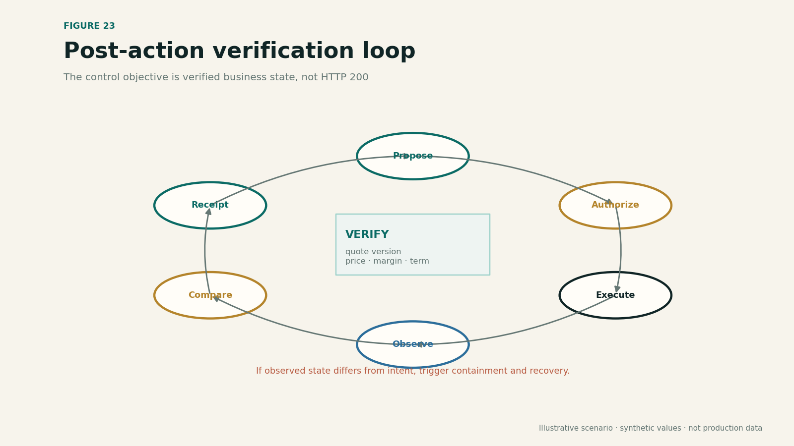
Verification should independently read the relevant business state and compare it with a postcondition. For the discount action, that may include quote version, approved percentage, currency, line-item exclusions, approval reference, opportunity amount, downstream contract draft, and absence of unauthorized field changes. Some checks are immediate; others are eventual and require a reconciliation window.
The result becomes an action receipt. Unlike a conventional application log, the receipt joins the complete chain: intent, evidence, policy decision, human approval, authority, tool invocation, observed outcome, discrepancy, and recovery pointer.
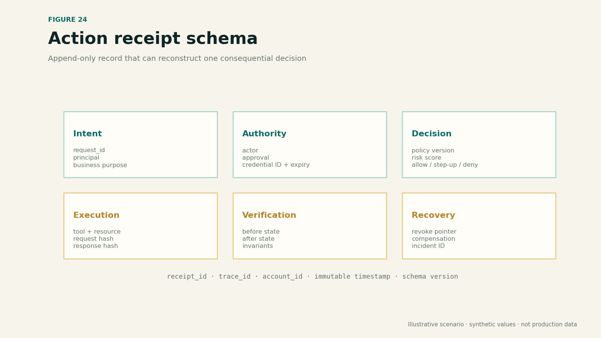
Receipts enable audit, customer support, incident response, model evaluation, and control testing. They also answer a question that ordinary CRM history cannot: “Why was this exact automated change allowed at that moment, and what proved it worked?” Sensitive rationale and evidence should be access-controlled and retained according to policy; observability is not permission to create a new data lake of secrets.
The technical trace should connect every control hop. OpenTelemetry context propagation can carry correlation across services, while its log data model supports trace and span identifiers that connect logs to distributed traces. Business identifiers—proposal, evidence, approval, lease, action, and receipt—should be recorded as governed attributes rather than improvised prose.
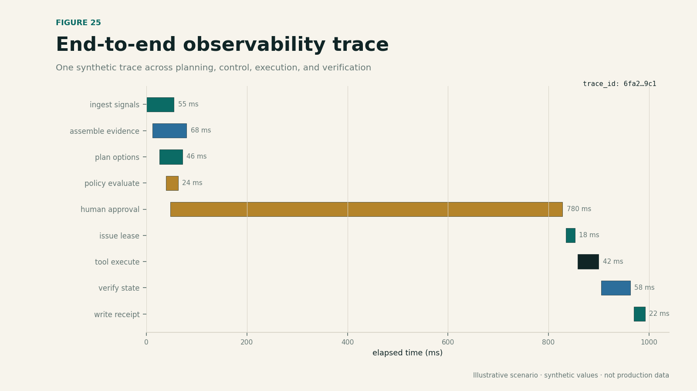
Do not put raw customer emails, contract text, access tokens, or unrestricted model prompts into trace attributes. Store references, classifications, hashes, and carefully redacted summaries. Telemetry must follow the same access, minimization, and retention rules as the workflow it observes.
Containment and recovery are product features#
High-risk workflows fail in more ways than “the model was wrong.” Evidence can be stale. The wrong quote version can be targeted. A legitimate approver can exceed a limit. A token can be replayed. The CRM can accept the write while a downstream system rejects it. A notification can be sent twice. A later automation can undo the correct change.
The design process should enumerate these failure modes before rollout and score both impact and likelihood under the planned controls.
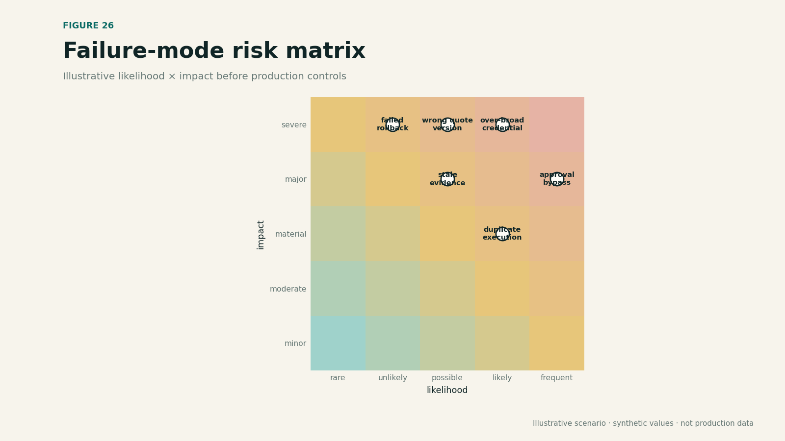
Containment is layered because any single control can fail. Business limits cap the permitted concession. Resource scope limits the account and quote. Field restrictions prevent unrelated mutation. TTL limits time. Single use limits repetition. Expected-version checks stop stale writes. Rate and value limits constrain bursts. An outbound-message hold can preserve a brief cancellation window. Independent verification catches divergence.
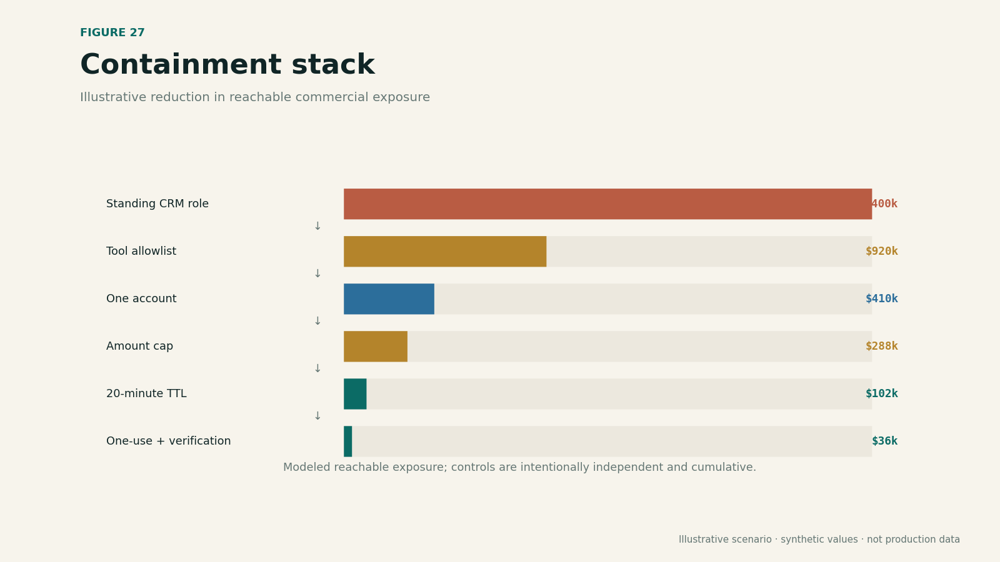
Recovery must be designed before the first autonomous action. “A human can fix it in the CRM” is not a runbook. Each action class needs a compensating operation, owner, deadline, evidence requirement, communication plan, and closure condition.
For a wrong quote, recovery may freeze further agent actions, revoke outstanding leases, stop outbound delivery, restore the prior version, notify sales operations and the account owner, reconcile connected CPQ and billing systems, preserve receipts, and require human closure. If a customer already received the commitment, reversal may be commercially or legally impossible; recovery then becomes escalation and remediation rather than rollback.
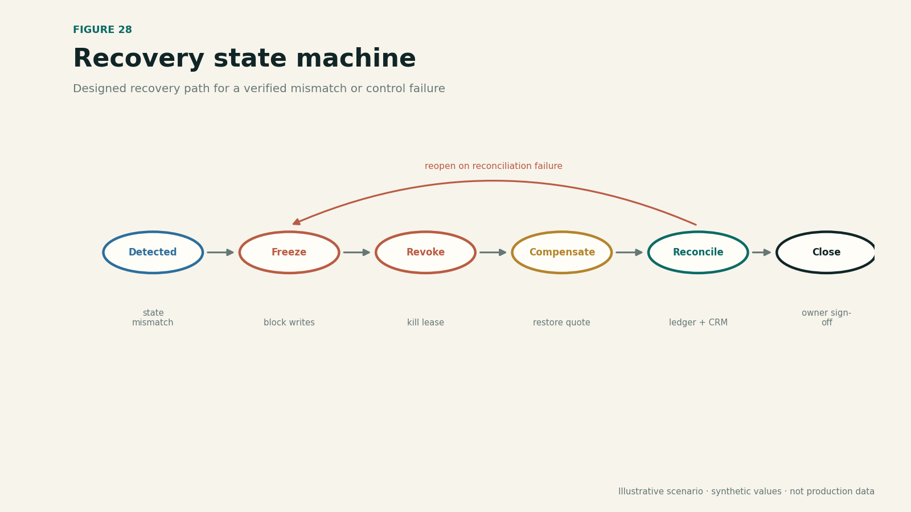
The operational view must combine business and control health. A dashboard limited to latency and error rate will miss invalid approvals, evidence conflicts, unused leases, verification mismatches, and unresolved compensations. Operators need one reconciliation queue organized around actions.
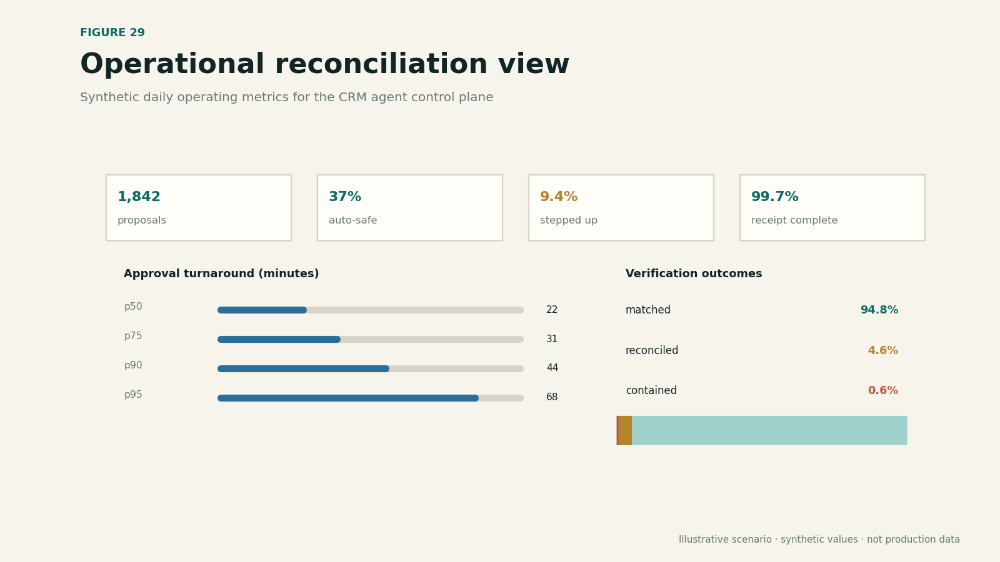
Useful measures include proposal-to-action conversion, automatic versus approved actions, decision latency by risk tier, approval modification rate, expired approvals, lease issuance and consumption, denied execution attempts, precondition failures, verification mismatches, recovery time, unresolved receipts, and repeated overrides by account or policy. These metrics reveal both safety problems and friction that encourages users to bypass the system.
Roll out autonomy as a control program#
The safe route to production is staged. Begin in observation mode, where the agent assembles evidence and predicts actions but cannot mutate records. Compare its proposals with human decisions. Then allow draft-only and reversible internal actions. Introduce approval-bound commercial actions after policy, lease, verification, and recovery services meet explicit performance gates. Expand autonomy by action class, not by turning an entire agent “on.”
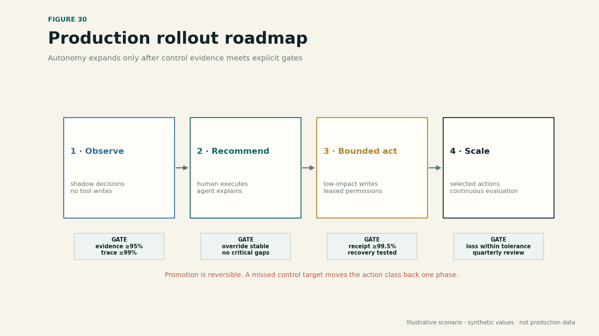
Each stage should have entry and exit criteria. Examples include evidence completeness, conflict-detection recall on test cases, calibration by action class, approval turnaround, policy decision reliability, zero unexplained standing credentials, verification coverage, recovery drill completion, and a defined error budget for mismatches. Red-team exercises should test indirect prompt injection, cross-account access, approval tampering, stale context, replay, retry duplication, tool substitution, and compromised dependencies.
NIST SP 800-207A applies zero-trust principles to cloud-native applications and service identities: access decisions should depend on explicit policy and identity rather than network location. Agentic workflows extend the same logic to business actions. Trust is not inherited because an agent runs inside the company’s cloud or was invoked by an employee.
The production contract#
Before a consequential CRM action can execute, the platform should be able to prove all of the following:
• Intent: the exact business delta is explicit, versioned, and idempotent.
• Evidence: sources, timestamps, quality, conflicts, transformations, and digest are recorded.
• Risk: impact, reversibility, uncertainty, scope, and control strength were evaluated for this action.
• Policy: a named policy version returned a decision and obligations.
• Accountability: the responsible human principal and current agent actor are both identifiable.
• Approval: an eligible reviewer approved the exact delta within limits and time.
• Authority: a narrow, audience-bound, short-lived, preferably single-use lease covers only this execution.
• Preconditions: live business state still matches the approved context.
• Execution: the tool call is constrained, authenticated, idempotent, and correlated.
• Verification: independent observation proves the intended postcondition—or raises a discrepancy.
• Receipt: the chain from intent to outcome is preserved with governed access and retention.
• Recovery: freeze, revoke, compensate, reconcile, notify, and close procedures are executable.
If any proof is missing, the workflow should degrade to a safer action: collect more evidence, prepare a draft, create an internal escalation, request approval, or wait. It should not quietly expand its own authority to meet a deadline.
So, should the agent act?#
For the synthetic $2.4 million escalation, the agent should act immediately on the preparatory layer. It should assemble the evidence bundle, expose the conflict between CRM probability and recent customer signals, check the governing contract and discount policy, model response options, draft a customer acknowledgement, reserve internal expertise within approved limits, and route an approval packet before the deadline.
It should not independently grant the 12 percent discount, promise a service credit, change contractual terms, or send a binding customer commitment. Those actions require the correct commercial and, where relevant, legal approvers.
If the approved decision is an 8 percent discount on a named quote with no change to payment terms, the system should mint a one-use lease for exactly that delta, execute with an expected version, verify the quote and downstream state, record the receipt, and terminate the authority. If material evidence or the quote changes, it should stop and request a new decision. If verification fails, it should freeze related actions and begin the prepared recovery path.
The production question is not whether the agent is intelligent enough to act. It is whether the system can prove that this action was authorized, bounded, verified, and recoverable.
That is a stricter standard than model confidence. It is also the standard that makes useful autonomy possible.
Sources and implementation references#
• NIST AI Risk Management Framework 1.0
• NIST NCCoE: Accelerating the Adoption of Software and AI Agent Identity and Authorization
• NIST SP 800-207A: A Zero Trust Architecture Model for Access Control in Cloud-Native Applications
• OAuth 2.0 Token Exchange — RFC 8693
• OAuth 2.0 Rich Authorization Requests — RFC 9396
• OAuth 2.0 Resource Indicators — RFC 8707
• OAuth 2.0 Demonstrating Proof of Possession — RFC 9449
• OpenID AuthZEN Authorization API 1.0
• SPIFFE Workload API
• OpenTelemetry context propagation and log data model
• OWASP LLM06:2025 Excessive Agency